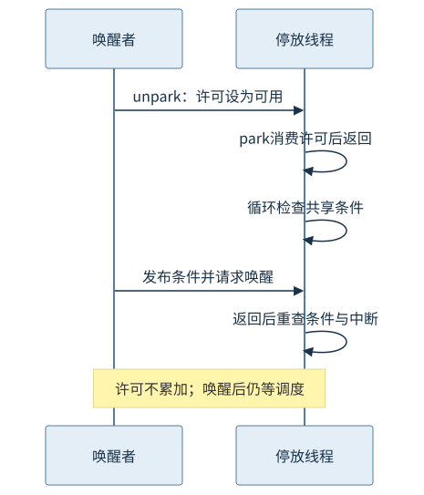

第六篇 · 内存模型、同步与线程
第26章 平台线程与 HotSpot 线程运行时
看到WAITING只是入口。线程对象、虚拟机执行状态和系统调度状态共同解释线程在等什么、还能怎样结束。
本章基于 Java 开发工具包（Java Development Kit，JDK）25.0.5.0.2 与 OpenJDK HotSpot；Java 虚拟机（Java Virtual Machine，JVM）的实现结论固定到提交 1775ea114f64。规范、实现与本轮观察分别解释。源码阅读、运行说明与证据索引相互对应。
26.1 线程对象与执行实体
26.1.1 三层身份不能混用
Thread对象是Java程序中的线程身份，包含名称、状态、线程局部数据和终止协作等。平台线程启动后，HotSpot以JavaThread维护执行栈、异常、安全点协作和运行时状态，OSThread再关联操作系统线程资源。三个层次有关联，却不是三个名称可随意替换的同一个对象。
仅构造Thread还没有执行run，也未取得与运行中平台线程等量的本地资源；终止后Thread对象仍可被集合持有，但底层执行实体已经走向释放。一个Thread只能启动一次。本例从NEW开始记录，最终join后记录TERMINATED，说明的是Java生命周期。S1
26.1.2 虚拟机也有自己的线程
VMThread协调特定虚拟机操作，收集器工作线程负责回收任务，编译线程处理编译队列，服务线程和附加监听器支持诊断。转储里看到的本地线程并不全是应用创建的Thread；名称、职责和是否执行Java代码需要一起辨认。
线程数过多时，先分开应用工作线程、运行时辅助线程和外部工具引入的线程。一次jcmd附加可能激活诊断路径，本例显式提前启动附加监听器，把这种观察条件写入记录。虚拟线程与载体的关系在第28章扩展，不能把这里的平台一对一模型直接推广。

26.2 生命周期与资源
26.2.1 启动与终止都是协议
Thread.start调用本地启动入口，创建并启动执行实体，准备JavaThread数据和系统线程资源；新线程进入运行时后执行run。普通返回和未捕获异常都会进入终止清理与通知路径，等待者可通过join确认结束。异常结束并不会把Thread重新变成可再次start的NEW对象。
固定Thread.java的start0、exit和clearReferences与HotSpot JavaThread退出路径共同说明清理责任。Java对象本身的可达性、线程已经终止以及某项本地资源实际释放是不同问题，不能用对象仍在堆中推断线程仍占处理器。

26.2.2 栈预算不等于已提交内存
每个平台线程需要原生栈地址空间、已提交的栈页、保护区域和操作系统管理结构，还可能持有线程局部对象与本地缓冲区。栈的预留、提交、驻留分别回答不同问题；把线程数乘以一个栈上限，只能得到条件化预算，不能直接当进程驻留实测。第9、12章给出对应账本。
线程爆炸的代价既可能来自内存，也可能来自调度和队列。默认线程栈与具体平台相关，缩小栈可能改变递归与本地调用安全边界。本章不制造线程创建失败或栈溢出，只启动两个教学线程并记录正常终止；不能由小样本反推出宿主的安全最大线程数。
26.3 不同层次的状态
26.3.1 六种Java状态不是调度器全集
NEW、RUNNABLE、BLOCKED、WAITING、TIMED_WAITING和TERMINATED是Java层状态。HotSpot另有Java执行、本地执行、虚拟机执行、阻塞及各类转换中的状态；操作系统还区分就绪、运行和不同睡眠原因。三层分类服务不同目的，不能制作一个没有条件的一对一换算表。
BLOCKED专指进入或重新获取内置监视器的等待，等待类库锁的线程常经park表现为WAITING。Object.wait释放监视器等待时与醒来后重获锁时也可能属于不同Java状态。只看WAITING无法判断是等待工作、等待许可还是等待其他线程结束。
26.3.2 RUNNABLE不保证正在占用处理器
Java的RUNNABLE覆盖正在执行和等待系统调度的情况，也可能覆盖某些本地阻塞。线程栈在本地方法，不能单凭Native Method或RUNNABLE判断它在做处理器密集计算。应结合连续栈、线程处理器时间的增量、操作系统状态和具体本地调用。
本轮两份转储里platform-parker处于TIMED_WAITING (parking)，platform-waiter处于TIMED_WAITING (on object monitor)，同一时刻ps -M显示系统线程多为S。macOS该命令没有输出可直接对应转储nid的逐线程标识，所以这里只作同一进程的系统视图对照，不宣称已经逐条完成映射。转储中的cpu累计量也不是采样间隔内的实时利用率。
26.4 阻塞、中断与许可
26.4.1 许可不累加，唤醒不等于立即运行
LockSupport为线程维护至多一个许可。先unpark再park可以使后者消费许可并返回；多次unpark不累积多个未来通行证。park也可能因为中断、超时或虚假返回而结束，所以正确用法是在循环中重查共享条件，以volatile或原子协议保证条件可见。
本例先在parker内部给自己许可，再消费它；随后进入有截止时间的条件循环。主线程发布proceed并unpark，发出中断，最终join。这个设计解释许可与结束责任，并不把park本身当作普通载荷的万能发布屏障。即使线程被唤醒，它仍须等待调度；许可和处理器使用权不是同一资源。S2

26.4.2 中断是可观察的协作请求
interrupt通常设置目标线程的中断状态。sleep、wait、join等可中断等待会按契约抛InterruptedException并清除状态；LockSupport.park则可返回而保留状态。Thread.interrupted检查并清除当前线程状态，isInterrupted不清除。具体阻塞调用还可能有自己的中断与资源关闭语义。
中断不会强制把任意计算或本地方法立即终止。上层必须决定是传播异常、恢复标记后退出，还是按明确协议处理。吞掉异常继续原工作会让取消失效。本例wait分支恢复标记后退出，park循环直接读标记；主线程finally负责发布结束条件并等待线程收尾，不依赖外部转储成功才退出。
26.5 线程转储与调度成本
26.5.1 把证据接到同一个问题
定位时先记录进程身份和时点，再从线程名与Java线程标识定位业务任务，查看栈顶、等待对象和锁拥有者；有条件时再与系统本地线程标识对应。连续快照能够区分栈稳定等待与正在推进，但两个相同栈仍不能单独证明死锁。
本章保留两份jcmd Thread.print -l、两份ps -M与最终日志。parker的blocker是PlatformJourney对象，waiter等待的是monitor，二者对象不同。锁拥有者、终止条件、采样间隔与资源计数共同支持解释；没有借一个状态名直接推断业务根因。
26.5.2 线程增加为何可能降低进展
当可运行线程超过可用处理器，调度器需要在更多执行实体间分配时间，切换还会影响缓存、地址转换与栈工作集。频繁阻塞与唤醒可能增加排队延迟，资源竞争可能让更多线程花时间等待。线程数量与吞吐没有简单正比关系。
单份转储不包含完整的调度等待时间分布，低处理器占用也不意味着系统无瓶颈。要确认调度不足，需要持续的系统或记录工具数据，并与业务任务和时间窗关联。本章只保留轻量连续观察，不执行过量线程、压力或性能基准，也不声称测得切换成本。
观察与边界
CH26-E01的两个线程均完成join并记录TERMINATED；parker最终proceed=true、interrupted=true，waiter在重获monitor后记录released=true。两份系统快照与转储在12秒窗口中实际采集，退出0，未遗留教学线程。
本轮没有Linux调度追踪、逐线程系统标识完整映射、上下文切换基准或线程耗尽。采样只描述所记录的时点，不能推广到完整生命周期中的每个状态。
回顾与思考
判断线程时，把身份、状态、栈、等待对象、进展与结束条件放在一起。中断是协作信号；唤醒后仍需调度；终止的Thread对象仍可存在。
- 为什么park与Object.wait都可能显示TIMED_WAITING，却不能使用同一套唤醒规则？
- 怎样区分RUNNABLE线程正在计算、等待处理器或停留在本地调用？
- 若主线程附加失败，教学线程是否仍能退出？
第27章沿同一个监视器继续追踪竞争、等待与退出。
来源
- Thread 25文档：平台线程与State、中断和join契约
- LockSupport 25文档：许可、虚假返回及条件可见性
- Thread实现：start0、exit与clearReferences
- HotSpot线程与系统层：线程退出与内部状态；关联os/bsd/os_bsd.cpp
精确路径、符号、条件和本轮记录见来源索引；源码阅读页是教学源码，不冒充HotSpot实现。